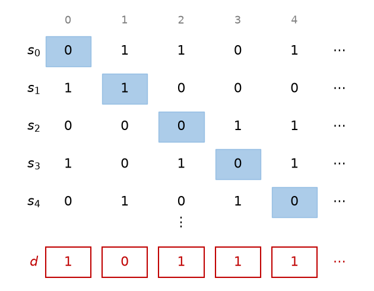

9. 集合の大きさ
有限集合の大きさは要素の個数で測れる。では、自然数全体と整数全体ではどちらが「大きい」だろうか。本章では、写像を使って集合の大きさを比べる考え方を導入し、無限集合にも大きさの違いがあることを示す。
9.1. 有限集合の要素数
有限集合 \(A\) の要素の個数を \(|A|\) と書く。有限集合の要素数について、次の法則が成り立つ。
名称 |
法則 |
|---|---|
和の法則 |
\(A \cap B = \emptyset\) ならば \(|A \cup B| = |A| + |B|\) |
包除原理 |
\(|A \cup B| = |A| + |B| - |A \cap B|\) |
積の法則 |
\(|A \times B| = |A| \cdot |B|\) |
写像の個数 |
\(A\) から \(B\) への写像は \(|B|^{|A|}\) 個ある |
べき集合の要素数 |
\(|\mathcal{P}(A)| = 2^{|A|}\) |
包除原理は、\(|A| + |B|\) では \(A \cap B\) の要素を 2 回数えているので、その分を引くという意味である。
写像の個数は、\(A\) の各要素について像の選び方が \(|B|\) 通りずつあることから、積の法則により得られる。
べき集合の要素数は、部分集合と写像の対応から分かる。\(A\) の部分集合 \(X\) に対し、
で定まる写像 \(\chi_X \colon A \to \{0, 1\}\) を \(X\) の特性関数という。部分集合 \(X\) に特性関数 \(\chi_X\) を対応させると、\(A\) の部分集合全体と \(A\) から \(\{0, 1\}\) への写像全体の間の全単射が得られる。写像は \(2^{|A|}\) 個あるので、部分集合も \(2^{|A|}\) 個ある。
プログラミングでは、要素数 \(n\) の集合の部分集合を \(n\) ビットの整数で表すことがある。これは特性関数の値を各ビットに並べたものである。
9.2. 鳩の巣原理
鳩の巣原理
有限集合 \(A\) と \(B\) について \(|A| > |B|\) ならば、\(A\) から \(B\) への単射は存在しない。
「\(n + 1\) 羽の鳩が \(n\) 個の巣に入れば、2 羽以上が入る巣がある」という言い方で知られる。当たり前に見えるが応用は広い。たとえば、出力が 64 ビットのハッシュ関数を考えると、出力の値は \(2^{64}\) 個しかない。入力となる文字列はそれより多いので、同じハッシュ値を持つ異なる文字列が必ず存在する。
9.3. 濃度
有限集合では要素を数えて大きさを比べられるが、無限集合では要素を数え尽くせない。そこで、写像を使って大きさを比べる。
定義（濃度の比較）
集合 \(A\) から \(B\) への全単射が存在するとき、\(A\) と \(B\) は濃度が等しいといい、\(|A| = |B|\) と書く。\(A\) から \(B\) への単射が存在するとき、\(|A| \leq |B|\) と書く。\(|A| \leq |B|\) かつ \(|A| \neq |B|\) のとき、\(|A| < |B|\) と書く。
集合の大きさを表すこの概念を濃度という。有限集合については、濃度が等しいことと要素数が等しいことは同じである。また、\(|A| \leq |B|\) かつ \(|B| \leq |A|\) ならば \(|A| = |B|\) であることが知られている（ベルンシュタインの定理）。
無限集合では、直観に反することが起こる。偶数全体の集合 \(E = \{0, 2, 4, \ldots\}\) は \(\mathbb{N}\) の真部分集合だが、\(n \mapsto 2n\) は \(\mathbb{N}\) から \(E\) への全単射なので、\(|E| = |\mathbb{N}|\) である。部分が全体と同じ濃度を持ちうることは、無限集合の特徴である。
9.4. 可算集合
定義（可算集合）
\(\mathbb{N}\) と濃度が等しい集合を可算集合という。有限集合または可算集合であることを高々可算であるという。可算集合でない無限集合を非可算集合という。
可算集合とは、要素に \(0, 1, 2, \ldots\) と番号を付けて、漏れなく重複なく一列に並べられる集合のことである。
整数全体 \(\mathbb{Z}\) は可算集合である。\(0, -1, 1, -2, 2, \ldots\) と並べればよい。式で書くと、
で定まる \(f \colon \mathbb{N} \to \mathbb{Z}\) が全単射である。
自然数の組全体 \(\mathbb{N} \times \mathbb{N}\) も可算集合である。組 \((m, n)\) を \(m + n\) の小さい順に、\(m + n\) が等しいものは \(n\) の小さい順に並べると、\((0, 0), (1, 0), (0, 1), (2, 0), (1, 1), (0, 2), \ldots\) とすべての組を一列に並べられる。
有理数全体 \(\mathbb{Q}\) も可算集合である。有理数は既約分数 \(p / q\)（\(p \in \mathbb{Z}\)、\(q\) は正の整数）としてただ 1 通りに表せるので、組 \((p, q)\) に対応させれば \(\mathbb{Q}\) から \(\mathbb{Z} \times \mathbb{N}\) への単射が得られる。\(\mathbb{Z} \times \mathbb{N}\) は上と同様に可算集合である。この単射の像は \(\mathbb{Z} \times \mathbb{N}\) の無限部分集合であり、可算集合の無限部分集合は可算集合なので、像と濃度が等しい \(\mathbb{Q}\) も可算集合である。
有限の長さの文字列全体 も可算集合である。使える文字が有限種類なら、長さの短い順に、長さが等しいものは辞書順に並べればよい。プログラムのソースコードは有限の長さの文字列なので、書きうるプログラム全体は可算集合である。この事実は本章の最後で使う。
9.5. 対角線論法
では、非可算集合は存在するのだろうか。各項が 0 か 1 である無限列 \(s = (s(0), s(1), s(2), \ldots)\) を 0-1 列と呼び、0-1 列全体の集合を \(S\) とする。
定理
0-1 列全体の集合 \(S\) は非可算集合である。
証明 \(S\) が可算集合であると仮定して矛盾を導く。仮定より、\(S\) のすべての要素を \(s_0, s_1, s_2, \ldots\) と一列に並べられる。ここで、新しい 0-1 列 \(d\) を
で定める。すなわち \(d\) の \(n\) 番目の項は、\(s_n\) の \(n\) 番目の項を反転させたものである。すると、どの \(n\) についても \(d\) と \(s_n\) は \(n\) 番目の項が異なるので、\(d \neq s_n\) である。これは \(d \in S\) がこの並びに現れないことを意味し、すべての要素を並べたという仮定に矛盾する。□
次の図のように、並べた列の対角線上の項を反転させて \(d\) を作るので、この論法を対角線論法という。


対角線論法
0-1 列は、実数の 2 進展開や、\(\mathbb{N}\) の部分集合の特性関数とみなせる。このことから、次の集合も非可算集合であることが示せる。
実数全体 \(\mathbb{R}\)。厳密には、\(0.0111\ldots = 0.1000\ldots\)（2 進表記）のように 1 つの実数に 2 通りの展開がある場合の扱いが必要だが、区間 \([0, 1)\) の実数を並べたと仮定して 10 進展開を使い、\(n\) 番目の数の小数第 \(n + 1\) 位が 5 でなければ 5、5 ならば 4 を並べた数を作れば、同じ論法で示せる。
\(\mathbb{N}\) のべき集合 \(\mathcal{P}(\mathbb{N})\)。
したがって \(|\mathbb{N}| < |\mathbb{R}|\) であり、無限集合にも大きさの違いがある。
9.6. カントールの定理
対角線論法は、任意の集合とそのべき集合の関係に一般化できる。
定理（カントールの定理）
任意の集合 \(A\) について、\(A\) から \(\mathcal{P}(A)\) への全射は存在しない。したがって \(|A| < |\mathcal{P}(A)|\) である。
証明 写像 \(f \colon A \to \mathcal{P}(A)\) を任意にとり、
とおく。\(D \in \mathcal{P}(A)\) である。もし \(D = f(d)\) となる \(d \in A\) があったとすると、\(D\) の定義より \(d \in D \iff d \notin f(d) = D\) となり矛盾する。よって \(D\) は \(f\) の像に含まれず、\(f\) は全射でない。また、\(a \mapsto \{a\}\) は \(A\) から \(\mathcal{P}(A)\) への単射なので \(|A| \leq |\mathcal{P}(A)|\) であり、全単射は存在しないので \(|A| < |\mathcal{P}(A)|\) である。□
この定理から、\(|\mathbb{N}| < |\mathcal{P}(\mathbb{N})| < |\mathcal{P}(\mathcal{P}(\mathbb{N}))| < \cdots\) と、いくらでも大きい濃度が存在することが分かる。
対角線論法の要点を有限の場合で確かめるサンプルコードを示す。後半では、\(A = \{0, 1, 2\}\) から \(\mathcal{P}(A)\) への写像 \(8^3 = 512\) 個のすべてについて、証明中の集合 \(D\) が像に含まれないことを確かめている。
1"""対角線論法とカントールの定理を有限の場合で確かめるサンプル。"""
2
3from collections.abc import Sequence
4from itertools import product
5
6
7def diagonal(sequences: Sequence[Sequence[int]]) -> list[int]:
8 """n 個の 0-1 列の n 番目の項を反転させた列を返す。
9
10 返す列は、i 番目の列と i 番目の項が異なるので、どの列とも一致しない。
11 """
12 return [1 - s[i] for i, s in enumerate(sequences)]
13
14
15def cantor_counterexample(a: Sequence[int], f: dict[int, frozenset[int]]) -> frozenset[int]:
16 """写像 f: A → P(A) に対し、D = {x ∈ A | x ∉ f(x)} を返す。"""
17 return frozenset(x for x in a if x not in f[x])
18
19
20def main() -> None:
21 sequences = [
22 [0, 1, 1, 0, 1],
23 [1, 1, 0, 0, 0],
24 [0, 0, 0, 1, 1],
25 [1, 0, 1, 0, 1],
26 [0, 1, 0, 1, 0],
27 ]
28 d = diagonal(sequences)
29 print("対角線から作った列:", d)
30 print("一覧に含まれるか:", d in sequences)
31
32 # A = {0, 1, 2} から P(A) へのすべての写像について、D が像に含まれないことを確かめる。
33 a = [0, 1, 2]
34 # 各要素を含むか（1）含まないか（0）の組から、A の部分集合をすべて作る。
35 subsets = [
36 frozenset(x for x, bit in zip(a, bits) if bit)
37 for bits in product((0, 1), repeat=len(a))
38 ]
39 count = 0
40 for values in product(subsets, repeat=len(a)):
41 f = dict(zip(a, values))
42 assert cantor_counterexample(a, f) not in f.values()
43 count += 1
44 print(f"{count} 個の写像 A → P(A) のいずれも全射でない")
45
46
47if __name__ == "__main__":
48 main()
実行結果は次のとおりである。
対角線から作った列: [1, 0, 1, 1, 1]
一覧に含まれるか: False
512 個の写像 A → P(A) のいずれも全射でない
9.7. 計算可能性との関係
対角線論法は、プログラムで解けない問題が存在することも示す。
自然数を受け取って「はい」か「いいえ」を答える問題（判定問題）は、\(\mathbb{N}\) から \(\{0, 1\}\) への写像、すなわち 0-1 列と同一視できる。0-1 列全体は非可算集合である。一方、可算集合の節で述べたとおり、プログラム全体は可算集合である。したがって、プログラムで解ける判定問題は可算個しかなく、ほとんどの判定問題はどのプログラムでも解けない。
具体的な例として、停止性問題が知られている。これは「任意のプログラムと入力が与えられたとき、そのプログラムがその入力に対して停止するかどうかを判定する」問題である。仮に、これを判定する関数 halts が書けたとする。
1from collections.abc import Callable
2
3
4def halts(program: Callable[[object], object], argument: object) -> bool:
5 """program(argument) が停止するなら True、停止しないなら False を返す（と仮定する）。"""
6 ...
7
8
9def paradox(program: Callable[[object], object]) -> None:
10 if halts(program, program):
11 while True: # 停止すると判定されたら、無限ループに入る
12 pass
13 # 停止しないと判定されたら、すぐに停止する
このとき paradox(paradox) は、halts(paradox, paradox) が True なら停止せず、False なら停止する。どちらにしても halts の判定は誤りになり、矛盾する。したがって halts は書けない。プログラムに自分自身を入力として与え、判定結果を反転させる構造は、対角線論法やカントールの定理の証明と同じである。